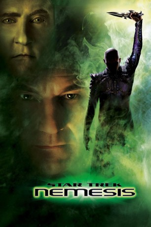

#416 Star Trek 10 - Nemesis
Alternativ: Star Trek: Nemesis
 
 IMDB-Wertung: 6.4 / 10
IMDB-Wertung: 6.4 / 10  Metascore: 51
Metascore: 51 
Captain Jean-Luc Picard bekommt den diplomatischen Auftrag, mit den Romulanern Frieden zu schließen. Doch auf dem fremden Planeten angekommen sieht er sich mit seinem bösen, um 30 Jahre jüngeren Klon Shinzon konfrontiert, der sich vom Arbeitssklaven zum Anführer des Kriegervolks emporgeschwungen hat. Shinzon benötigt zum Überleben eine Gen-Transplantation von Picard, ehe er mit einer Waffe von gigantischer Zerstörungskraft daran gehen kann, alles Leben auf der Erde zu vernichten und die Föderation zu zerstören.
Jahr: 2002
Dauer: 116 Minuten
FSK: 12
Land: USA Studio: Paramount PicturesTonspuren: DD5.1 - ,
Untertitel: Deutsch, Englisch,
Auflösung: 1080p (1920x816) Größe: 10956 MB
Genre: Action, Thriller, Sci-Fi, Abenteuer
Regisseur:  Stuart Baird
Stuart Baird
Drehbuch: Gene Roddenberry, John Logan, Rick Berman, Brent Spiner, John Logan
Soundtrack: Jerry Goldsmith
Darsteller:
 Patrick Stewart als Jean-Luc Picard
Patrick Stewart als Jean-Luc Picard Jonathan Frakes als William Riker
Jonathan Frakes als William Riker Brent Spiner als Data / B-4
Brent Spiner als Data / B-4 LeVar Burton als Geordi La Forge
LeVar Burton als Geordi La Forge Michael Dorn als Worf
Michael Dorn als Worf Marina Sirtis als Deanna Troi
Marina Sirtis als Deanna Troi Gates McFadden als Beverly Crusher
Gates McFadden als Beverly Crusher Tom Hardy als Shinzon
Tom Hardy als Shinzon Ron Perlman als Viceroy
Ron Perlman als Viceroy- Shannon Cochran als Senator Tal'aura
 Dina Meyer als Commander Donatra
Dina Meyer als Commander Donatra Jude Ciccolella als Commander Suran
Jude Ciccolella als Commander Suran Alan Dale als Praetor Hiren
Alan Dale als Praetor Hiren Kate Mulgrew als Admiral Janeway
Kate Mulgrew als Admiral Janeway- Robertson Dean als Reman Officer
 Wil Wheaton als Wesley Crusher
Wil Wheaton als Wesley Crusher Majel Barrett als Computer
Majel Barrett als Computer Whoopi Goldberg als Guinan , uncredited
Whoopi Goldberg als Guinan , uncredited- John Jurgens als Reman soldier , uncredited
- Marti Matulis als Reman Officer , uncredited
- Rachelle Roderick als Romulan Senator , uncredited
- Bryan Singer als Kelly , uncredited
- Doug Wax als Bridge Officer , uncredited
- John Berg als Senator
- Michael Owen als Helm Officer Branson
- David Ralphe als Commander
 J. Patrick McCormack als Commander
J. Patrick McCormack als Commander- Baron Jay als Starfleet Officer , uncredited
- Jasmine Lliteras als Romulan , uncredited
- Brian Patterson als Reman Warrior , uncredited
- Gregory Sweeney als Enterprise-E Officer , uncredited
Datei: X:\7+mehr(A-Z)\Star Trek\Star Trek 10 - Nemesis (2002, FSK12, 1920x816).mkv seit 21.02.2015
Festplatte: HD Collection-7+mehr(A-Z)+Person
 Es gibt insgesamt 19 Filme in der Gruppe '7+mehr(A-Z)\Star Trek'
Es gibt insgesamt 19 Filme in der Gruppe '7+mehr(A-Z)\Star Trek'